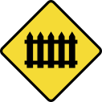
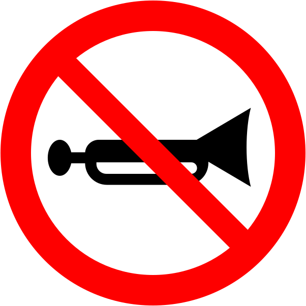
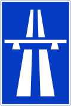

The 7 Classes of Sri Lankan Road Signs
Approximately 35% to 40% of the DMT theory examination directly evaluates your knowledge of road signs, signal lights, and road markings. Master the legal classification system and shape recognition below:
Danger Warning Signs (DWS)
Shape & Color: Equilateral Triangle (Apex Upward), thick Red border, Yellow or White background.
Legal Purpose: Alerts drivers of immediate hazards ahead. Requires easing off the throttle, maintaining lane, and preparing to react.

Guarded LevelProhibitory Signs (PHS)
Shape & Color: Circular, Red border, White or Blue background with diagonal red strike-through.
Legal Purpose: Absolute negative orders forbidding specific actions. Disobedience constitutes a strict liability traffic offense.

No HornRestrictive Signs (Speed Limits)
Shape & Color: Circular, Red border, White background with black numbers or weight/height dimensions.
Legal Purpose: Restricts speed, weight, or dimensions. In Sri Lanka: 50 km/h (Urban), 70 km/h (Rural), 100 km/h (Expressway), 40 km/h (3-Wheelers).
Mandatory Signs (Positive Orders)
Shape & Color: Circular, deep Blue background, crisp White directional symbols.
Legal Purpose: Commands an action you MUST take. Drivers cannot choose alternative routes or directions.
Priority Signs (Right of Way)
Unique Shapes: Octagonal (STOP), Inverted Triangle (Give Way), Diamond (Priority Road).
Legal Purpose: Unambiguously regulates who must yield at junctions even when obscured by weather or darkness.
Directional, Signals & Markings
Shapes & Colors: Green (Expressways/A-Class), Blue (Provincial/Facilities), Yellow Box Intersections, White solid continuous centerlines.
Key Rule: Never cross solid white lines to overtake. Enter yellow box only when your exit is completely clear.

ExpresswayStudy the Full 134 Gazette Road Signs Library
Search all 134 signs by code (e.g. DWS-01, PHS-04), filter by category, read official legal meanings, and flip interactive 3D flashcards.